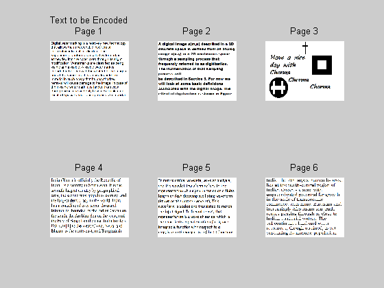
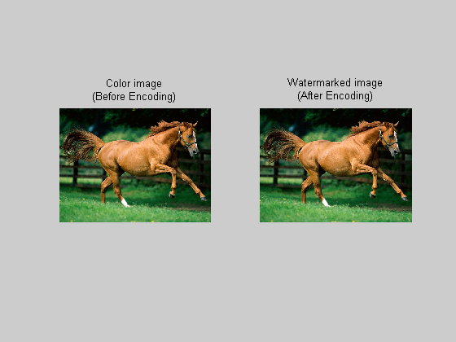
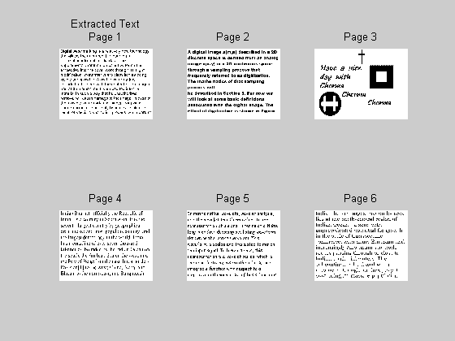

This program can encode the text images (6 images max) in a single color image. And also can easily recover the texts already being hided. It is very simple one,but very useful Major advantage of this encoded image is like a original image as before encoding. The image has no visible changes. So no one can easily read the hidden texts by sight. The decoding logic only can recover the texts. Thus this special features of encoded image make it used to save the confidential data. Also can used for web applications, mail services, media etc.,. Can we avoid any one can read/modify our own data.
In this part obtained the input (1 Color image + 6 Text images) from local drive. Collect all images as a separate variable. Change the location of the image mentioned in imread() function as per your image.
clc; close all; clear all; % Image input im=imread('d:\Documents and Settings\Cherma\Desktop\new\123.bmp');% Color image tx1=imread('d:\Documents and Settings\Cherma\Desktop\new\1.bmp');%Text page 1 tx2=imread('d:\Documents and Settings\Cherma\Desktop\new\2.bmp');%Text page 2 tx3=imread('d:\Documents and Settings\Cherma\Desktop\new\3.bmp');%Text page 3 tx4=imread('d:\Documents and Settings\Cherma\Desktop\new\4.bmp');%Text page 4 tx5=imread('d:\Documents and Settings\Cherma\Desktop\new\5.bmp');%Text page 5 tx6=imread('d:\Documents and Settings\Cherma\Desktop\new\6.bmp');%Text page 6 figure(1); subplot(2,3,1);imshow(tx1);title({'Text to be Encoded';'Page 1'}); subplot(2,3,2);imshow(tx2);title('Page 2'); subplot(2,3,3);imshow(tx3);title('Page 3'); subplot(2,3,4);imshow(tx4);title('Page 4'); subplot(2,3,5);imshow(tx5);title('Page 5'); subplot(2,3,6);imshow(tx6);title('Page 6');
In this part the desire text images (max 6 images) are going to encoded with the Color image. At first pair of text images are combined into a single image. Simple logic is used to achieve this. Pixels are selected from alternate location of pair of text images. As a result of this, image having details (but alternate locations) about pair of two text images. Further explained that if a location (n,m) have the pixel of Image 1 next location (n+1,m+1) have the pixel taken from Image 2. This task is done by alterim() function. Two arguments of this function are two text images.
Next step is to encode the text image which was already obtained from the result of alterim() function. We obtained 3 single text images from this function. Each image is encoded in each color frames R,G and B respectively. To do this I used a simple logic. i.e. encode the text image as a bit of color image LSB. Because LSB bit is very less significant, so changing this bit won't affect the entire image. Further the text image is having only black and white area. So I fix a threshold as 128. If a pixel value of a text image is >128, LSB of Color image is set as '1' otherwise '0'. Simply says if text is present set that LSB as 1 otherwise 0. Similar way I do it for other two color frames. All the above operations are performed by imhide() function for each frame respectively. Arguments of this function are a color frame and a text image obtained from alterim() function. Finally each frames are added to form a Encoded Water mark image.
NOTE: In bmp format each color frame bits are represented by 8-bits. We took the LSB of that 8-bit.
tx1=alterim(tx1,tx2);% Text images 1 & 2 tx2=alterim(tx3,tx4);% Text images 3 & 4 tx3=alterim(tx5,tx6);% Text images 5 & 6 % Hide the text image in color image R(:,:,1)=imhide(im(:,:,1),tx1); R(:,:,2:3)=0;% Text images 1 & 2 in R frame G(:,:,2)=imhide(im(:,:,2),tx2); G(:,:,1:2:3)=0;% Text images 3 & 4 in G frame B(:,:,3)=imhide(im(:,:,3),tx3); B(:,:,1:2)=0;% Text images 5 & 6 in B frame temp=R+G+B; figure(2);subplot(1,2,1); imshow(im); title({'Color image';'(Before Encoding)'}); figure(2);subplot(1,2,2); imshow(uint8(temp)); title({'Watermarked image';'(After Encoding)'});
In this part two functions are used to recover the text image from Encoded image. First step is to extract the text image. Remember that text image encoded in the color image in each frame is the alternate combination of two images (Text). The function txtxtract() just extract the text image which is the combination of two text images, not by separate. As we encode our data in LSB of each color frame that bit alone sufficient to reconstruct our text image. So logical AND operation is used to recover the LSB. Reverse operation of function imhide() is used to reconstruct the text. Next step is to separate the pair of two text images from the result of function txtxtract(). Alternate selection used in previous Encoding section is used again for all pair of images.
R=txtxtract(temp(:,:,1));% Recover text image 1 & 2 from R frame G=txtxtract(temp(:,:,2));% Recover text image 3 & 4 from G frame B=txtxtract(temp(:,:,3));% Recover text image 5 & 6 from B frame [tx1 tx2]=imxtract(R);% Collect pixels from alternate locations [tx3 tx4]=imxtract(G);% Collect pixels from alternate locations [tx5 tx6]=imxtract(B);% Collect pixels from alternate locations
This part is the final step in my program. The images obtained from previous step is not a tappered. So finally all text images are smoothen by using fspecial() function available in MATLAB.
PSF = fspecial('laplacian'); figure(3); subplot(2,3,1);imshow(medfilt2(edgetaper(tx1,PSF)));title({'Extracted Text';'Page 1'}); subplot(2,3,2);imshow(medfilt2(edgetaper(tx2,PSF)));title('Page 2'); subplot(2,3,3);imshow(medfilt2(edgetaper(tx3,PSF)));title('Page 3'); subplot(2,3,4);imshow(medfilt2(edgetaper(tx4,PSF)));title('Page 4'); subplot(2,3,5);imshow(medfilt2(edgetaper(tx5,PSF)));title('Page 5'); subplot(2,3,6);imshow(medfilt2(edgetaper(tx6,PSF)));title('Page 6');